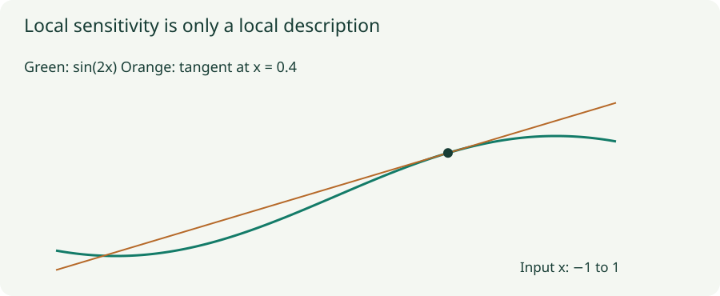

Noise, Consistency, and Gradient Penalties: Control Sensitivity
Derive how input noise induces L2 and Jacobian-plus-Hessian penalties, connect consistency losses to the Jacobian Frobenius norm, and compare R1 with WGAN-GP.
A model that memorizes training points often changes steeply in the space around them. Injecting random input noise $\xi$, penalizing prediction changes across perturbed views, or penalizing input derivatives $\nabla_x f(x)$ directly all control local sensitivity.
1. Input noise on a linear model equals exact L2 regularization
Take a linear predictor $f(x)=w^\top x$, add zero-mean noise $\xi$ with $\mathbb E[\xi]=0$ and covariance $\mathbb E[\xi\xi^\top]=\Sigma$, and let $r=w^\top x-y$ be the clean residual. Expanding the expected squared error gives:
When the noise is isotropic ($\Sigma=\sigma^2 I$), the penalty is $\sigma^2\|w\|_2^2$—so adding Gaussian input noise of variance $\sigma^2$ to linear least squares is exact L2 ridge regression (Bishop, 1995).
2. Nonlinear models: second-order Taylor expansion
For a twice-differentiable predictor $f(x)$ with clean residual $r=f(x)-y$ and isotropic noise $\xi\sim\mathcal N(0,\sigma^2 I)$, expand $f(x+\xi)$ to second order:
Squaring $r+\nabla_x f(x)^\top\xi+\frac12\xi^\top H_f(x)\xi$ and keeping terms up to $O(\sigma^2)$ (using $\mathbb E[\xi]=0$ and $\mathbb E[\xi^\top A\xi]=\sigma^2\operatorname{tr}A$) yields two distinct penalty terms:
- First-order Jacobian term $\sigma^2\|\nabla_x f(x)\|_2^2$: Comes from $\mathbb E[(\nabla_x f^\top\xi)^2]$ and penalizes steep input slopes.
- Second-order Hessian term $\sigma^2 r\,\operatorname{tr}H_f(x)$: Comes from the cross term $2r\cdot\frac12\mathbb E[\xi^\top H_f\xi]$; it vanishes only when the model is linear ($H_f=0$) or already interpolates the label ($r=0$).

3. Lab: exact noisy loss vs. first- and second-order expansions
Gaussian perturbations of a curved predictor
Use $f(x)=\sin(\omega x)$ and target $y=0.4$. Compare exact Gaussian expected squared loss with the locally linear and second-order approximations. The selected noise level also runs 20,000 seeded Monte Carlo draws as an independent numerical check.
4. Consistency regularization vs. explicit gradient penalties
Instead of comparing $f(x+\xi)$ to the label $y$, consistency regularization (such as Mean Teacher, which compares the student on one perturbed view against an EMA teacher on another) penalizes the change in prediction itself:
where $\|J_f(x)\|_F^2=\sum_{i,j}(\partial f_i/\partial x_j)^2$ is the squared Frobenius norm of the input–output Jacobian (with no $r\operatorname{tr}H_f$ cross term because $r=0$ when comparing $f(x+\xi)$ to $f(x)$).
| Penalty | Formula | What it enforces |
|---|---|---|
| Contractive / Jacobian penalty | $\|J_f(x)\|_F^2$ | Pushes all first-order input sensitivities toward $0$ locally. |
| R1 GAN penalty | $\frac\gamma2\mathbb E_{x\sim p_{\rm data}}\bigl[\|\nabla_x D(x)\|_2^2\bigr]$ | Zeroes discriminator slope on the real data manifold to prevent oscillations near Nash equilibrium. |
| WGAN-GP | $\lambda\mathbb E_{\hat x}\bigl[(\|\nabla_{\hat x}D(\hat x)\|_2-1)^2\bigr]$ | Pins discriminator gradient norm to $1$ along real–fake interpolants $\hat x$ (1-Lipschitz constraint). |
# R1 gradient penalty: create_graph=True keeps second derivatives for optimizer.step()
x_real = x_real.detach().requires_grad_(True)
d_real = discriminator(x_real)
grad_x = torch.autograd.grad(d_real.sum(), x_real, create_graph=True)[0]
r1_penalty = 0.5 * gamma * grad_x.flatten(1).square().sum(dim=1).mean()5. Questions worth answering
In $(f(x+\xi)-y)^2=(r+\nabla f^\top\xi+\frac12\xi^\top H_f\xi)^2$, the Hessian enters through the cross product $2r(\frac12\xi^\top H_f\xi)$ with the clean residual $r=f(x)-y$. Consistency compares $f(x+\xi)$ to $f(x)$, where the baseline residual is identically zero.
Because the penalty depends on $\nabla_x D_\theta(x)$, and updating the weights $\theta$ requires differentiating that penalty with respect to $\theta$ (computing mixed second partials $\frac{\partial}{\partial\theta}\nabla_x D_\theta(x)$).
Sources
Bishop, Training with Noise is Equivalent to Tikhonov Regularization; Tarvainen and Valpola, Mean Teachers are Better Role Models; Mescheder et al., Which Training Methods for GANs Do Actually Converge?; Gulrajani et al., Improved Training of Wasserstein GANs.